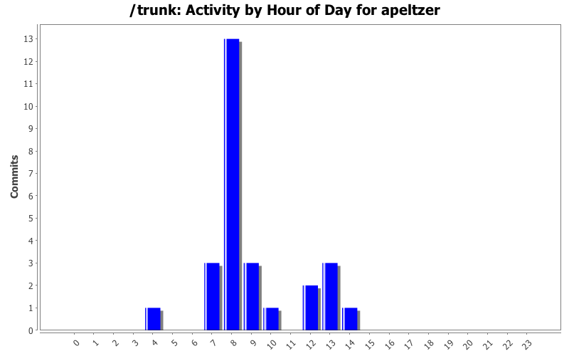
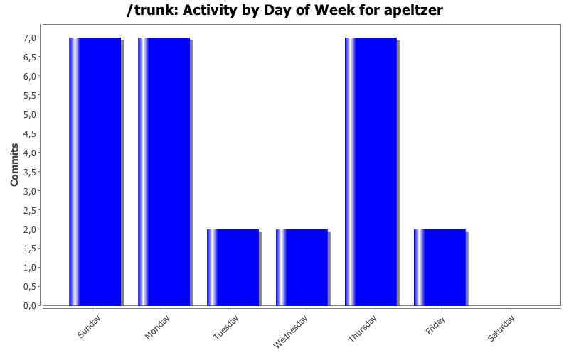
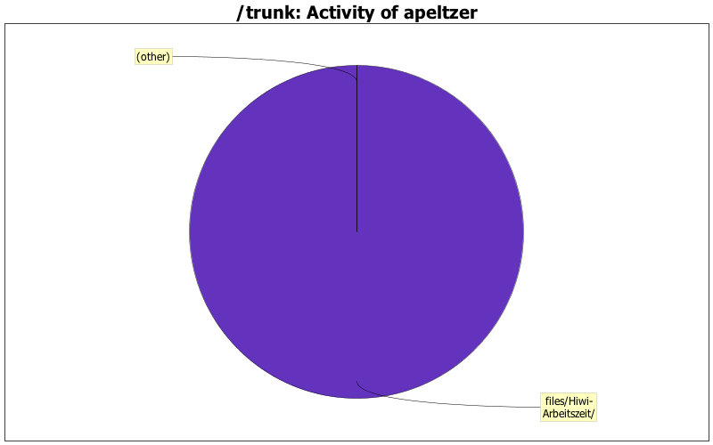

| Directory | Changes | Lines of Code | Lines per Change |
|---|---|---|---|
| files/Hiwi-Arbeitszeit/ | 27 (100.0%) | 200 (100.0%) | 7.4 |

working hours (last)
0 lines of code changed in 1 file:
Working hours
0 lines of code changed in 1 file:
working hours
0 lines of code changed in 1 file:
besprechung
0 lines of code changed in 1 file:
Arbeitszeit diese Woche
0 lines of code changed in 1 file:
Old working hours removed
0 lines of code changed in 1 file:
Working hours updated, included meeting hours and calculated overall working time.
162 lines of code changed in 1 file:
working hours
1 lines of code changed in 1 file:
Working hours added
4 lines of code changed in 1 file:
working hours this week
3 lines of code changed in 1 file:
Working hours spent
3 lines of code changed in 1 file:
working hours today
14 lines of code changed in 1 file:
Working hours spent
13 lines of code changed in 2 files:
Working hours first week of january
0 lines of code changed in 1 file:
working hours updated
0 lines of code changed in 1 file:
working hours
0 lines of code changed in 1 file:
working hours
0 lines of code changed in 1 file:
Working hours spent
0 lines of code changed in 1 file:
Working hours
0 lines of code changed in 1 file:
Arbeitszeit heute
0 lines of code changed in 1 file:
(3 more)